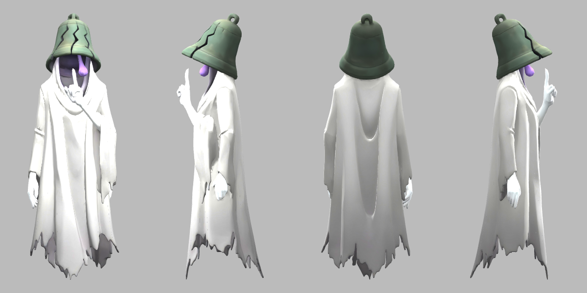

Your export of the Still Spire's last warden, the robed figure with a cracked bronze bell for a head, its finger pressed to where its lips would be. It now has a skeleton and 12 moves made by hand. It drifts 0.22 u above the floor. Five small bells circle it, and each Stillness silences one of them. It points the Still Note onto a hero and swings its bell head down a lane for the Unringing. For the Great Hush it rises with its arms spread, then sinks drained. The timings come from the game. Pick a move and drag to turn the view, then judge the weight and the hit. Nothing in the game has changed.
Idle or Drift sets what it does between attacks, and Going turns it on the spot. An Action plays over that and repeats until you press it again. Hurt plays on top of anything. Death holds it down; press it again to spawn it back in. The bar names the part of the move that is playing. Stilled sets how many of its five bells are silenced: the game stills one at 75, 50 and 25 percent health. Each Stillness press stills the next bell. From the Second Stillness the note leaves a patch of silence, and in the Third its ring grows to 2.3 u.

It came through in one piece. It has the verdigris bell head with the crack down its face and a loop on top, the violet face under the rim, the long white robe with a torn hem, and pale hands. Its left hand holds a finger to its face. Its face points straight ahead, so nothing was corrected. Three things are joined that a skeleton needs apart. There was a small third hand hanging low on its left side, under the raised left arm; I cut it away (about 320 triangles). The right hand is fused to the robe's hem, so it hangs with the cloth. The left forearm is fused to the chest. Your design has five small bells circling it, but the export has none, so I added them (about 1,240 triangles).
| Move | What it does | Timing |
|---|---|---|
| Idle | It floats and breathes, and the robe sways and settles. The crack in its bell breathes a cold light. The small bells circle and sway. Partway through it lifts its finger and presses it back to its face. | 6 s loop |
| Drift | It glides forward, leaning a little. The hem trails behind and ripples. It has no feet, so nothing steps. | Game: 1.25 u/s. It keeps 3 to 5.5 u from its target. |
| Turn left, turn right | It turns on the spot. The bell head leads and the robe swings after it. | Mine: 90 degrees a second. The game turns it to its target at once. |
| Still Note | The ring fills on the hero while it points at them with its finger, and the crack brightens. On the beat the ring goes off and the hero is hushed: a pale ring hangs round them. Then the finger comes back to its face. | Game: Ember ring of radius 1.8 u on a hero for 50 ticks; 11 damage and a 35 percent slow for 1.5 s. From the Second Stillness it leaves a patch of silence for 3 s (30 percent slow); in the Third the ring is 2.3 u. Here the hero stands 4.2 u away. |
| Unringing | While the lane fills it draws its head back and its arm in. On the beat it swings the bell head down the lane and thrusts its hand after it. A pale wave runs down the lane. Then it straightens. | Game: Ember lane 1.3 u wide, 2.5 to 9 u long, for 56 ticks; 15 damage. Here the hero stands 6 u away. |
| Great Hush | It rises with its arms spread while the great ring fills round it. Its bells swing wide and pale motes are drawn in from the edge. On the beat the ring goes off, and it holds high for a moment. Then it drops, drained: it hangs low and limp with the crack gone dim and the bells slowed. It wakes and rises back to its float. | Game: Ember ring of radius 4.6 u round itself for 96 ticks; 20 damage. Then it is drained for 90 ticks, taking 30 percent more damage. It comes every 600 ticks, or every 480 in the Third Stillness. Here the hero stands 3.2 u away. |
| Stillness | It lifts its finger high, then brings it down. The next small bell goes dead: it drops, goes grey and stops swaying. The head bows as it happens. | Mine: 1.8 s. The game stills a bell at 75, 50 and 25 percent health but has no pose for it. |
| Hurt | The bell head and chest are knocked back. Plays on top of any move. | 0.42 s |
| Heavy hit | It is shoved back 0.3 u. The bell head snaps back, the robe flares, and it rights itself. | 1.1 s |
| Spawn | It grows out of a pale pool on the floor and rises limp. It lifts its head, and the finger comes to its face as the bells rise into their ring. | Game: grow in 7 frames. The rise is mine. |
| Death | A jolt throws it upright with its arm spread. It hangs for a moment, then the robe sinks and crumples to the floor. The bell head bows down onto the heap. The crack and the face go dark, and the small bells fall and go grey. | 2.7 s, then it stays down |
A checker follows every point of the model (17,543 of them) through every frame of every move (1,526 frames). It looks for five things. Sizes are in u; it is 2.6 u tall.
| Checked | Found in the first build | Now |
|---|---|---|
| A joint that jumps in one frame (a pop) | None. | None. |
| Any part under the floor | In the death the robe and hips sank up to 0.12 u into the floor as it crumpled. | None. The heap now settles on the floor. |
| One part pushed through another | The robe lies in folds over itself as modelled, so the checker counts layers that already touch at rest. | The same folds, up to about 0.15 u deep. They are layers of cloth over cloth that you cannot see from outside. The left hand dips into the bell's rim, up to 0.14 u, when it presses the finger to the face. That is where your model has it. |
| Skin torn or pulled (a seam that opens) | Lifting the right arm pulled the robe's hem up with it into a sheet, stretching it 58 times. The left elbow pulled the drape at the chest, stretching it 17 times. | The right arm stays down and its hand moves with the hem, so the hem holds. The drape now follows the shoulder. One stretch is still there, where the left forearm is fused to the chest. When that arm lifts high (the Great Hush, the Stillness and the death), the cloth between them tents out, stretching up to about 20 times. It reads as the sleeve pulling, not a tear. The stills look natural. |
| Smoothness (a move that stops dead, a loop that jumps) | None. | None. Every move eases in and out, and the loops meet themselves. |
| What was measured, on every frame of every move | Result |
|---|---|
| Floor | It has no feet. The hem stays above the floor in every move, and the death heap rests on it. |
| Loops that jump when they restart (idle, drift, both turns) | 0 degrees. |
| Head facing straight | Straight on the model, so nothing was corrected. |
| Hard parts | The bell head rides its own bone, and so does each small bell, so none of them bends. The bending is in the robe, the neck and the arms. |
| Feet | None; it floats, so there is no splay to check. |
These numbers come from the model file. I checked the poses as still frames only, because the cloud machine cannot play the page at full speed. The weight, the timing and the hit are yours to judge.